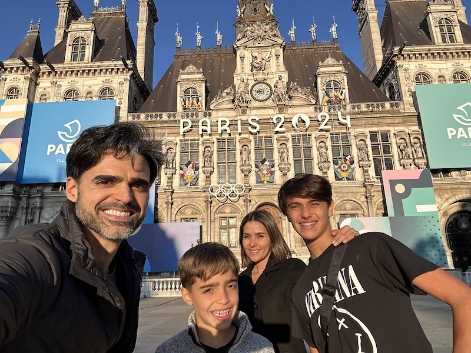
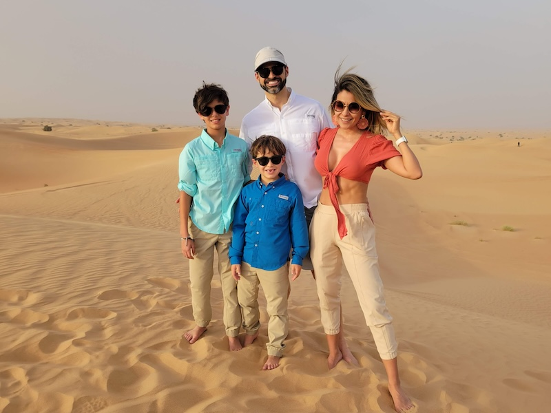
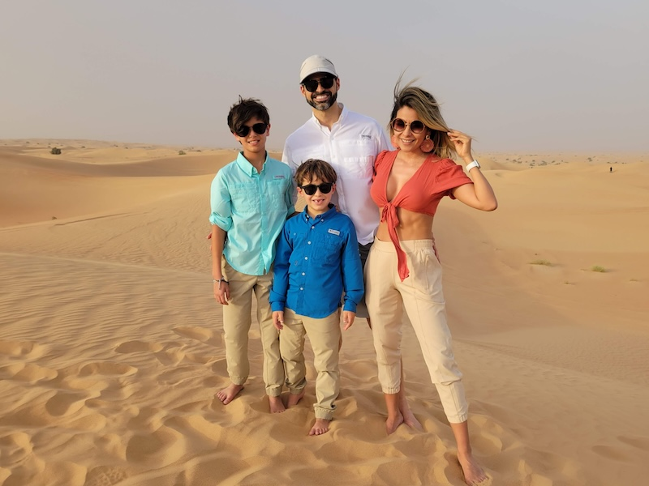
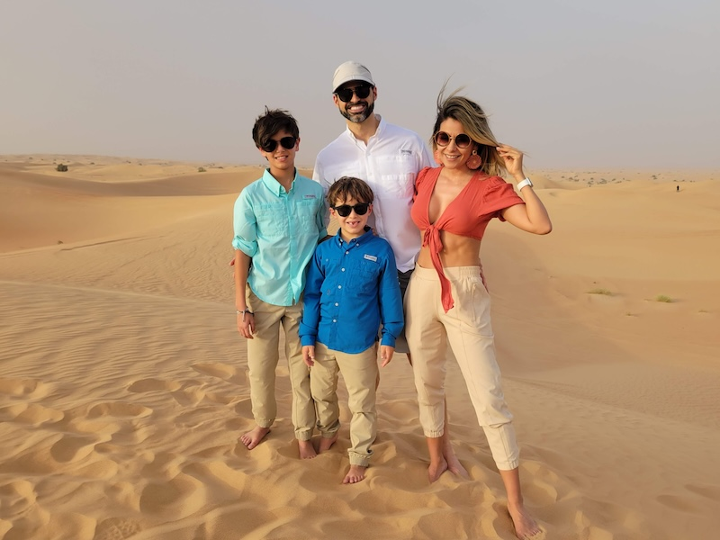

About Me
I am a seasoned Technical Program Manager with over 20 years of experience leading complex programs across diverse industries. I thrive at the intersection of technology, business, and customer satisfaction, leveraging my expertise to deliver innovative solutions and drive impactful results.
Key Highlights
- Successfully launched the VisaGo app for the Paris Olympics, achieving 102k downloads and exceptional user ratings.
- Led agile transformation for 20+ global teams, enhancing team velocity by 20% and setting a foundation for scaled execution.
- Implemented resource management frameworks and tools, boosting operational efficiency by 50% within 6 months.
- PMP-certified with a proven track record in aligning technical execution with strategic objectives.
Personal Information
Outside of work, I enjoy spending quality time with my family, exploring nature, and capturing moments through photography. I’m an avid soccer fan and love playing casual games with friends on weekends.

 

